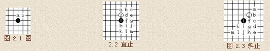
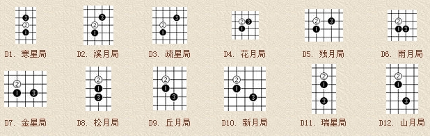
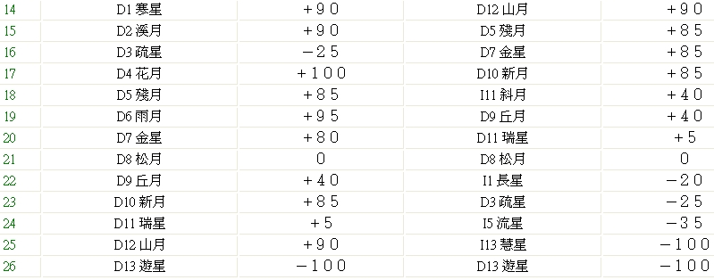

五子棋初级爱好者的甜饼。。。。
#1 五子棋初级爱好者的甜饼。。。。 作者：刀魂 发表时间：2008-11-3 16:27:31
五子棋的开局是十分重要的。一般情况下，一局五子棋的着数在 20 至 40 着之间，因此，它的开局阶段是非常短暂的，大约在 7 、 8 着至 10 几着之间。在这一阶段的争夺中，双方
的布局、应答将对以后的胜负起着关键的作用。一般来说，黑棋以攻为主，而白棋则以防为主。 
职业连珠的开局是建立在两套基本打法上的，即“直止 (Direct) 打法 ” 和
“ 斜止 (Indirect) 打法”。如图 2.1 所示，按照职业连珠规则，黑 1 必须落在天元，
如果像民间走法不走天元，则称之为“奇门”。之后，白 2 落子在天元直线侧 a 点
为“直止打法”，落子在天元斜侧 b 点为 “ 斜止打法 ” 。
由这两种打法派生出各 13 种开局，如图 2.2 和图 2.3 所示。每种开局都有
不同的名称，如下各图解：
直止打法开局：

斜止打法开局：

职业连珠指定开局名称繁多，不易记忆。京都五子棋少年队总教练 彭建国 先生编写
的《彭氏口诀》则有助于记住职业开局的名称：
寒星溪月疏星首，花残二月并白莲，雨月金星追黑玉，松丘新宵瑞山腥。
星月长峡恒水流，白莲垂俏云浦岚，黑玉银月倚明星，斜月名月堪称朋。
二十六局先弃二，直指游星斜慧星。
口诀中前四句为直止，五至八句为斜止。将白 2 子比喻为白莲，将黑 1 子比喻为黑玉，
很富有诗意。最后两句所指如下图所示。

在开局阶段，双方主要是二的争夺。双方必须设法创造自己的连二、活二、
跳二或大跳二等，同时要阻挡对方的活二。无论哪种开局，均体现出这一规律。
可以说，哪一方的二做得多 ( 有两个以上的活二 ) ，或者有效地阻挡住对方的活二，
那么，哪一方的胜率就比较大。另外，开局时每一个次序、每一种节奏都不能忽视，
输赢就在一步之差。

#2 Re:五子棋初级爱好者的甜饼。。。。 作者：nara 发表时间：2008-11-4 10:36:00
这些好象是从励精教室那里搬来的吧?原作者应该不是你吧?
#3 Re:五子棋初级爱好者的甜饼。。。。 作者：刀魂 发表时间：2008-11-4 10:37:10
难道你不知道 有盗版一说吗。。。
#4 Re:五子棋初级爱好者的甜饼。。。。 作者：耳痛 发表时间：2008-11-4 11:29:21
刀魂 感谢转贴 建议你再添点刀开局的图
这个不可忽视
很重要。 。 。
#5 Re:五子棋初级爱好者的甜饼。。。。 作者：刀魂 发表时间：2008-11-4 16:39:26
。。。 呵呵 谢谢夸奖